Synoptics
- Introduction
- 1.1 Designer
- 1.1.1 Menu
- 1.1.2 Drawing tools
- 1.1.2.1 Generic properties
- 1.1.2.2 Effects
- 1.1.2.3 Specific properties
- 1.1.3 Dynamic components
- 1.1.3.1 Label
- 1.1.3.2 Indicator
- 1.1.3.3 Progress bar
- 1.1.3.4 Switch
- 1.1.3.5 Circular progress bar
- 1.1.3.6 Link
- 1.1.3.7 Pie chart
- 1.1.3.8 Chart
- 1.1.3.9 Historical table
- 1.1.3.10 Operation switch
- 1.1.3.11 Operation button
- 1.1.4 Layers
- 1.1.5 Parameters
- 1.1.5.1 List of parameters
- 1.1.5.2 Parameter properties
- 1.2 Viewer
- 1.2.1 Synoptic with parameters
- 1.1 Designer
1. Introduction
One of the analysis tools available in the system are the synoptics, which allows the visualization of the values in real time represented by vector graphics that change dynamically according to the different values of the signals associated with them.
This section is divided into two important tools: the viewer and the synoptic designer.
1.1 Synoptic designer
The synoptic designer allows both the edition of an existing synoptic in IDboxRT and the creation of a new one.
The creation of a new synoptic will be done from the shortcuts section of the Web client.
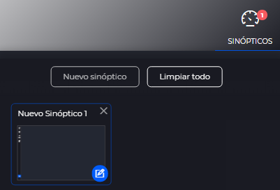
There are several options for editing a synoptic: * From the document explorer, we will search in the document hierarchy for the location of the synoptic and edit it either by using the edit option in the top toolbar of the hierarchy or by using that option from the context menu of the document.
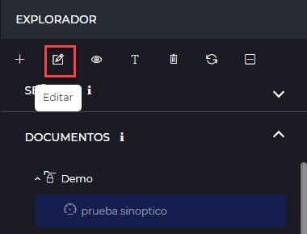 
- In the document explorer, in the central document section of the selected hierarchy, the following button
 will appear on the synoptic to edit the synoptic.
will appear on the synoptic to edit the synoptic. - From editing another synoptic, there is also the possibility of opening another synoptic in edit mode.
With any of the above options, the synoptic designer will open.
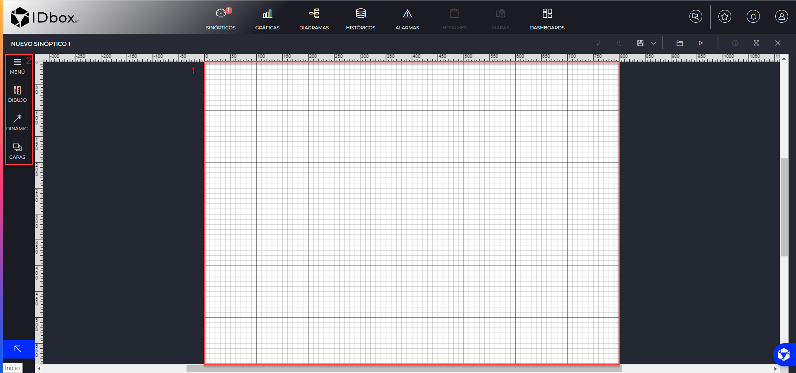
The main area of the interface (1) will be occupied by the tapestry, where the synoptic will be drawn.
The mouse wheel allows to increase or decrease the detail of the tapestry.
Selecting an option from the left side panel(2) will display a submenu with the available settings for that element.
The menus available from the left side panel are: * Menu: Provides access to the basic tools for working on the elements. * Drawing tools: Gives access to the static elements that can be added to the synoptic (shapes, text, image, etc.). * Dynamic components: Gives access to the dynamic elements that can be added to the synoptic (progress bar, chart, indicator, etc.). * Layers: Gives access to the list of synoptic layers. Allows to configure the synoptic layers.
When more than one component is selected in the tapestry, the right side panel opens with alignment options to apply to the selection in various positions.
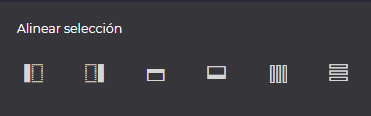
The editor has a clipboard where the last copied elements are stored, allowing you to drag the elements to the pencil to create copies.
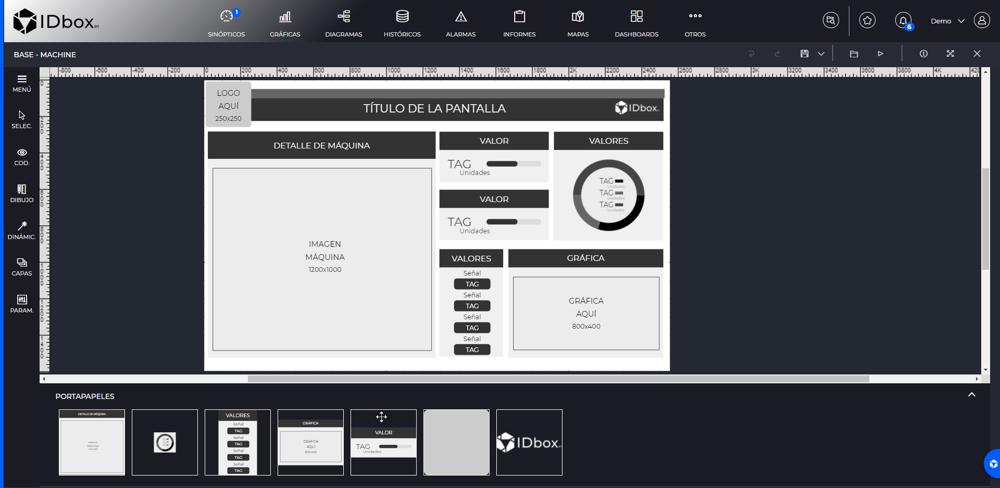
1.1.1 Menu
From the Menu section, selecting it will display an adjacent panel with the following actions:

- Show/Hide code: Displays the svg code of the synoptic. It is possible to modify the synoptic from the code view.
- Copy: Possibility to copy selected elements (keyboard shortcut CTRL+C).
- Paste: Action of pasting those elements previously copied (CTRL+V).
- Clone: Ability to clone previously designed elements on the synoptic tapestry.
- Delete: Possibility of deleting elements (Supr key).
- Move to the front: Allows you to sort elements on the screen, bringing the selected elements in front of the screen.
- Move to the bottom: Allows you to sort the elements of the screen, to move the selected elements to the back of the screen.
- Group: Allows you to group the selected elements.
- Ungroup: Allows to ungroup a previously grouped element in as many elements as they had before the grouping.
- Tapestry preferences: It allows you to choose the resolution, adjust the tapestry to the content of the canvas, change the orientation and apply a background color to the tapestry. Selecting this option opens a side panel to the right of the tapestry with these options.

- Show grid: Allows you to show or hide the grid on the canvas.
1.1.2 Drawing tools
The drawing tools allow us to draw static shapes in the synoptic, you can enhance these elements by changing the color, borders and other effects.
In order to draw elements on the tapestry, we should select the desired shape and click on the tapestry at the place where we want to start drawing the element.
The following drawing tools are available.
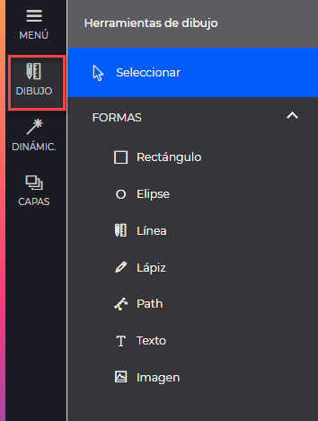
- Select: Allows you to select one or more (Shift) objects on the wallpaper.
- Rectangle: Allows you to draw a rectangle. If ‘shift’ is held down while drawing, it will draw a square.
- Ellipse: Allows you to draw an ellipse. If ‘shift’ is held down while drawing, it will draw a circle.
- Line: Allows you to draw straight lines.
- Pencil: Allows you to draw a freehand line.
- Path: Allows you to draw a path point by point. The tool allows you to modify the curvature of the lines joining the points once the path has been created.
- Text: Creates a text box.
- Image: Allows you to insert an image to the tapestry.
When drawing any of the shapes, a right panel will open with generic properties as well as specific properties for some of them.
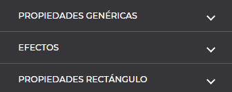
1.1.2.1 Generic properties
The generic properties that apply to all drawing tools are as follows:

- ID: Identifier that the object will have in the code.
- Alias: Name that will allow the object to be identified in the template selectors.
- x and y: Indicates the x and y position of the object in the tapestry and allows the exact location of the object when entering the values in the fields.
- Rotation: Indicates the rotation range of the object.
- Border thickness: Sets the border thickness of the object by a value, either entered in the text box or by the value selectors. 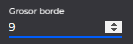
- Border color: Set the border color by hexadecimal code.
- Fill color: Set the fill color of the element by hexadecimal code.
- Opacity: Sets the transparency of the object.
1.1.2.2 Effects
The properties included in the effects section are also common to all drawing tools, except for the color change property which does not apply to the image component.

- Blinking: Option to activate the flashing of the element when the synoptic is being displayed.
- Tooltip text: Text that will be displayed when hovering or clicking on the object. Tooltip Object
- Object tooltip: Allows you to select another object in the synoptic (by selecting it with the magnifying glass or typing its identifier in the text field) to be displayed when you hover the mouse pointer over it.
- Show at startup: Option to display the tooltip at the start of the synoptic.
- Hide the rest: Option to hide the other visible tooltips of the synoptic.
- Show on mouse over: Displays the tooltip when hovering over the element. If this check is disabled, the tooltip will be displayed only when you click on the element. Color change
- Value: Allows you to select the signal by which the color change of the document is to be produced.
- Change in: Allows you to select whether the color change will be defined by the value or state of the selected signal.
- Add new item: Configuration of the color as well as the interval by which the color change will occur in the element. It allows us to add as many items as color changes per interval needed.
1.1.2.3 Specific properties
Some drawing tools have specific properties. Of the tools currently available in the system, the rectangle, ellipse, text and image have specific properties.
1.1.2.3.1 Rectangle
The rectangle tool has the following specific properties.

- Width/height: Allows you to fine-tune the dimensions of the rectangle/square.
- Corner radius: Allows the radius to be applied to corners.
1.1.2.3.1 Ellipse
The ellipse tool has the following specific properties.

- Radio X/Radio Y: Allows to adjust the dimensions (X and Y) with more numerical precision.
1.1.2.3.1 Text
The text tool has the following specific properties.
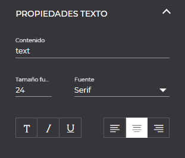
- Content: Indicates the text to be displayed in the element.
- Font size: Allows you to change the font size.
- Text formatting options: Allows you to activate bold, italic and underline text formatting. Several formats can be combined.
- Source: Allows the selection of the font for the text.
- Alignment: Allows you to select the alignment of the text in the element itself.
1.1.2.3.1 Image
The image tool has the following specific properties.

- Width/Height: Allows for more precise numerical adjustment of the image dimensions.
- Select image: Allows you to change the previously selected image when adding the object.
1.1.3 Dynamic components
The dynamic components are the objects in charge of creating the animations that show the status of the different control points to be monitored. Their representation will change depending on the values they receive in real time from the associated signal.
To add these components to the tapestry, we will have to select the component and drag it to the desired position of the tapestry.
The following dynamic components are available.

As with the drawing tools, all these dynamic components have the same generic properties explained in the drawing tools section Generic properties and effects, in addition to those specific to each component.
All dynamic components share the same property which is signal, which we will choose from the specific properties of each component, which will open the signal selector where we can select the signal or function to which we want to link the component.
1.1.3.1 Component label.
The label component is a text box to which a signal is assigned, and will show its value in real time on the display.
In addition to the Generic properties and the effects, the label component has the properties of the Text component and the following specific ones.
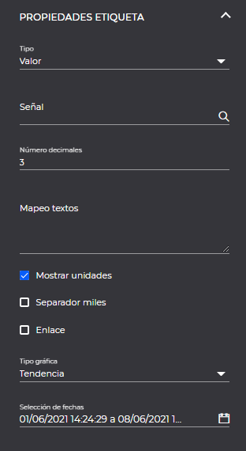
- Type: Option to choose whether to display the value or the status in real time.
- Signal: Allows you to select a signal from the list of available signals that will be opened by clicking on the magnifying glass or by clicking directly on this field.
- Number of decimal places: Option to enter the number of decimal places to be displayed.
- Text mapping: Allows us to enter text mappings to the values. For example: O-Off, 1-On.
- Show units: Checked by default. Allows us to choose whether to show the units of the signal.
- Thousands separator: Allows us to choose whether a dot will be displayed as a thousands separator.
- Show status: If the selected type is “status”, it allows us to choose whether all the statuses or the highest priority status will be shown.
- Link: If the selected type is “value”, it allows us to choose if the click event will be enabled to open a new graph with the selected signal.
- Graph type: Allows us to choose the type of graph that will be opened when clicking on the object.
- Date selection: If the selected graph type is other than “real time”, it allows us to choose the dates with which the graph will open when clicking on the object.
1.1.3.2 Indicator component.
The indicator component is a needle that changes its position according to the real-time value of the selected signal within the minimum and maximum values configured in the component itself.
In addition to the Generic properties and effects (except for the color change property which does not apply to this component), the indicator component has the following specific properties.

- Signal: Allows you to select a signal from the list of available signals that will be opened by clicking on the magnifying glass or by clicking directly on this field.
- Minimum value: Minimum range of indicator values.
- Maximum value: Maximum range of values of the indicator.
- Minimum angle: Minimum range of needle rotation (in degrees).
- Maximum angle: Maximum range of needle rotation (in degrees).
1.1.3.3 Progress bar.
The progress bar component is a band-shaped graphic element that varies according to the real-time value of the signal.
In addition to the Generic properties and effects, the progress bar component has the properties of the Rectangle component and the following specific ones.
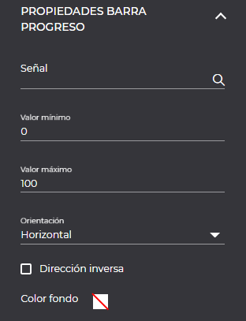
- Signal: Allows you to select a signal from the list of available signals that will be opened by clicking on the magnifying glass or directly on this field.
- Minimum value: Minimum value to be displayed in the progress bar.
- Maximum value: Maximum value to be displayed in the progress bar.
- Orientation: Allows you to orient the progress bar horizontally or vertically.
- Reverse direction: Activate the reverse direction on the bar, moving from right to left.
- Background color: Static background color of the bar.
1.1.3.4 Switch component.
The switch component allows you to draw several objects, each of which will be displayed depending on the real-time value of the selected signal.
In addition to the Generic properties and effects (except for the color change property which does not apply to this component), the switch component has the following specific properties.

- Signal: Allows you to select a signal from the list of available signals that will be opened by clicking on the magnifying glass or by clicking directly on this field.
- Add new item: Allows you to add as many items as value configurations you want for the signal. For each item added, a configuration tab of the item will be displayed as shown in the following picture.
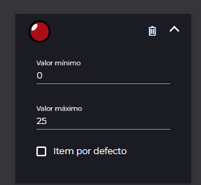
This configuration will show a thumbnail of the image that will be displayed when the signal has the value configured for that item. * Minimum value: Minimum value of the range of values for which the image will be displayed. * Maximum value: Maximum value of the range of values for which the image will be displayed. * Default item: Allows us to select which will be the default item to display from all the configured items.
To add the image to each configured item we must follow the following steps. 1. In the tapestry we will have to have the shape or image that we want to link to the item (in our example it will be the square in red).

- Drag the image (red square) over the switch component that you have previously incorporated to the tapestry, the following screen will appear where you will have to drag the image to the desired item.
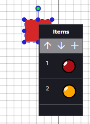
The items can be rearranged either from the configuration screen of the switch itself by dragging and dropping the item to be moved and dropping it on the new position or by using the items screen shown in the previous image, selecting the item to be moved and repositioning it using the arrows.
1.1.3.5 Circular progress bar.
The circular progress bar component is a percentage indicator in the form of a circle that visually displays the value of the selected signal.
In addition to the Generic properties and effects, the circular progress bar has the following specific properties.

- Signal: Allows you to select a signal from the list of available signals that will be opened by clicking on the magnifying glass or by clicking directly on this field.
- Minimum value: Minimum value to be displayed in the progress bar.
- Maximum value: Maximum value to be displayed in the progress bar.
- Background color: Static background color of the bar.
1.1.3.6 Link component.
The link component creates a rectangle in the tapestry that is placed over the area to be linked. It allows to choose between links to different web documents (synoptics, graphics, diagrams, etc.).
In addition to the Generic properties and effects, the link component has the following specific properties.
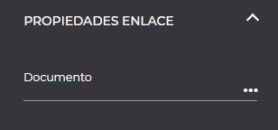
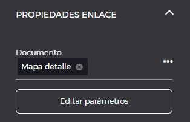
- Document: Allows you to select the location and the document on which you want to create a link.
- Edit parameters: Visible if the selected document is of synoptic type and has parameters. When clicked, it displays a modal window in which you can set the values of the parameters of the selected synoptic.

1.1.3.7 Pie chart.
The pie chart component allows to visualize the values of different signals by means of a pie chart representation.
In addition to the Generic properties and effects (except for the color change property which does not apply to this component), the pie chart has the following specific properties.
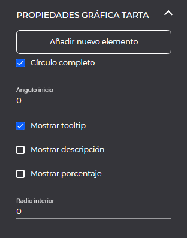
- Add new item: Allows the selection and configuration of the signals to be added to the pie chart. When adding a new item, a tab is added to the configuration where we can select the signal, the tooltip to display and the color, as well as the option to delete the selected item.
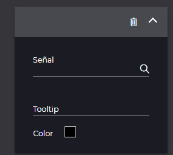
- Full circle: Select whether you want a full circle (360º, checked) or half circle (180º unchecked).
- Start angle: Allows you to select what will be the starting position in degrees for the first value.
- Show tooltip: Checked by default, it shows the name of the signal or the configured text to be shown in the tooltip, when passing over the corresponding pie section.
- Show description: Displays the name of the sign above each pie section.
- Show percentage: Shows the percentage of the signal on top of each pie section.
- Inner radius: Allows to set the hollow center of the pie (donut type) either in pixel indicating only numerical value or in percentage adding to the numerical value a % symbol.
Within the pie chart configuration, there is an option to reorder items by drag and drop.
1.1.3.8 Graphic component.
The graphic component allows you to add to the synoptic a graphic previously generated and stored in the system.
In addition to the Generic properties and effects (except for the color change property which does not apply to this component), the graphics component has the following specific properties.
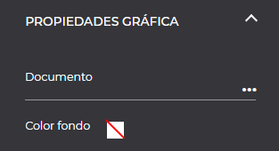
- Document: Allows you to select the location and the graphic to be embedded in the synoptic.
- Background color: Allows you to select the background color of the graph, by default transparent.
1.1.3.9 Historical table.
The historical table component allows to display the historical data of several signals in table format.
In addition to the Generic properties and effects (except for the color change property which does not apply to this component), the history table component has the following specific properties.
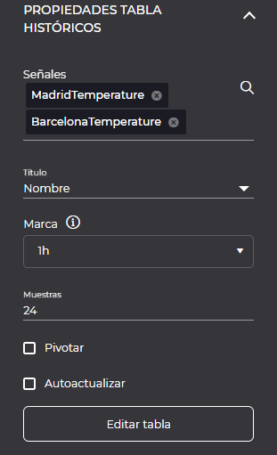
- Signals: Allows you to select the signals to be displayed.
- Title: Allows to indicate whether to display the name or the description of the signal, by default the name of the signal will be displayed.
- Mark: Allows to modify the frequency of the historical data.
- Samples: Allows to modify the number of samples to be displayed.
- Pivot: Allows to pivot the table (change the rows by columns).
- AutoUpdate: Allows to indicate if the table will be updated with new historical data.
- Edit table: Shows a modal window that allows to modify the table properties.
1.1.3.9.1 Table properties.
Allows you to modify the properties of the table by displaying its preview.

- Rows: Displays the number of rows in the table.
- Columns: Displays the number of columns in the table.
- Border: Allows you to select whether to show the table border or not.
- Color border: Allows to modify the color of the table border.
- Headers: Allows to modify the highlighted cells (none, first row, first column, last row, last column, rows to bands, columns to bands).
- Alignment: Allows you to modify the alignment of the table texts (left, center or right).
- Header color: Allows you to modify the fill color of the highlighted cells.
- Content color: Allows you to change the color of the cells that are not highlighted.
You can change the height of the rows and the width of the columns by dragging the mouse over the dividing line:

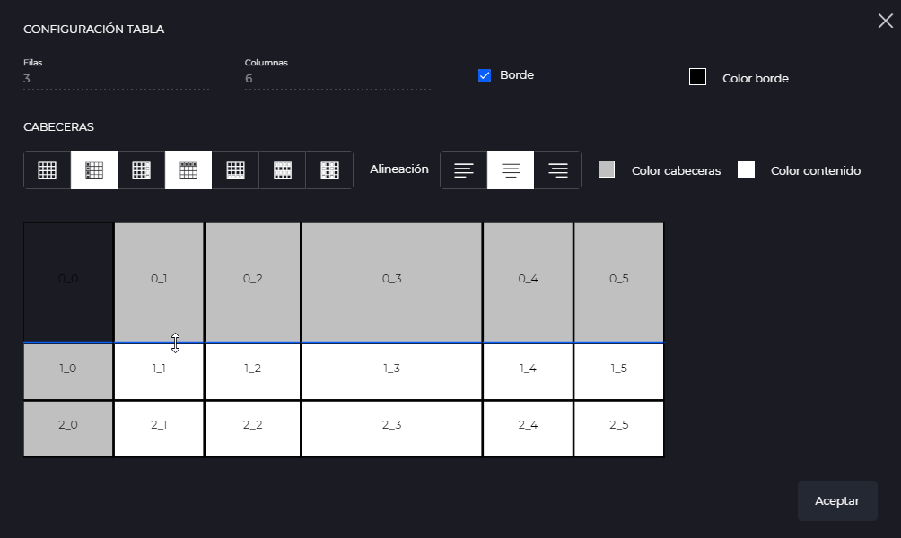
1.1.3.10 Interruptor operación.
The switch component allows to send commands on the selected signal.
In addition to the Generic properties and the effects (except for the color change property which does not apply to this component), the operation switch component has the following specific properties.
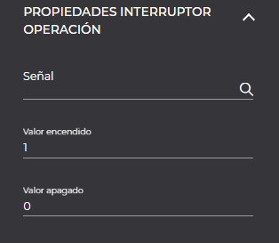
- Signal: Allows to select the signal on which the command is to be sent.
- Value on: Value to be sent when the breaker is turned on.
- Value off: Value to be sent when the switch is turned off.
To add the image to each configured item we must follow the following steps.
-
In the tapestry we will have to have the shape or image that we want to link to the item. (in our example it will be the square in green)

-
Drag the image (green square) over the switch component that we have previously incorporated to the tapestry, the following screen will appear where we will have to drag the image to the desired item. 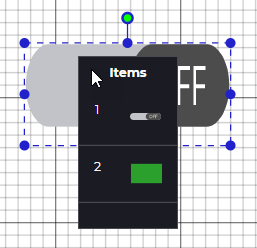
1.1.3.11 Operation button.
The operation button component allows you to send a command on the selected signal. It allows to select among three ways of sending.
In addition to the Generic properties and effects, the operation button component has the following specific properties.
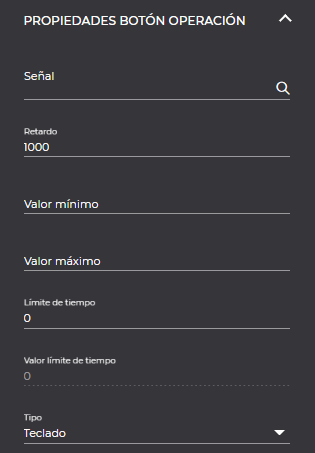
- Signal: Allows to select the signal on which the command is to be sent.
- Delay: Delay time for sending the command.
- Minimum value: Minimum value that can be sent in the command.
- Maximum value: Maximum value that can be sent in the command.
- Time limit: Time limit for resetting the value.
- Time limit value: Value to be reset when the time indicated in the “time limit” field has elapsed.
- Type: Allows to select the type of sending: keyboard, selector or sending. The default type is keyboard.
If the type is “keyboard” the following properties will be displayed:

- Real time: Select whether to initialize the keyboard with the last value of the signal.
If the type is “selector” the following properties will be displayed:

- Text mapping: Allows you to select the signal on which the command is to be sent.
- Show value: Allows you to select whether to show the value or not.
- Source size: If “show value” has been selected, the size of the text can be modified.
If the type is “send”, the following properties will be displayed:
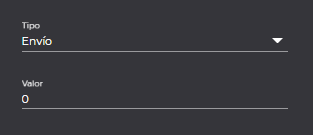
- Value: Select the value to be sent.
1.1.4 Layers
From the layers section, we can create as many layers as we need for the design of our synoptic as well as choose in which layer we want to work in each moment blocking the rest of the layers.
Its use is recommended when we import large synoptics and we want to add dynamic components without modifying their appearance.
The options available in the layers panel are the following:

- Add: Allows you to add a new layer.
- Delete: Allows you to delete the selected layer.
- Rename: Allows you to rename the selected layer.
- Move up layer: Allows layer sorting, moving the selected layer up one position.
- Move down layer: Allows you to sort layers, moving the selected layer down one position.
- Hide/Show layer: Allows you to hide or show the layer on the tapestry.
1.1.5 Parameters.
Parameters are objects that allow the configuration and editing of values in certain elements, such as labels, progression bar… so that these values can be easily edited and accessed.
1.1.5.1 List of parameters.

In the parameters section is defined the list of parameters of the document, in this section we can create, edit and delete them.
- Add: Allows to add a new parameter.
- Delete: Allows to delete the selected parameter.
When selecting a parameter, the right panel with the properties of the parameter will be displayed.
1.1.5.2 Parameter properties.
Allows you to modify the following properties of the selected parameter:

- Title: Add or edit a title.
- Description: Add or edit a description.
- Required: If you want the value to be mandatory.
- Type: Parameters can be of two types, value or token.
- Signal/value selector: In this section we can select a signal with the help of the modal or simply add a name.
1.2 Synoptic viewer
The synoptic viewer allows the visualization of a synoptic previously designed with the Designer tools showing the real-time values of the configured dynamic components.
To display a synoptic, it will be necessary to select a synoptic type document from the document explorer, several options are available.
-
From the hierarchy, once the document has been selected, either through the
 option of the upper toolbar, through the Open option of the document’s contextual menu or by double clicking on the synoptic to be displayed.
option of the upper toolbar, through the Open option of the document’s contextual menu or by double clicking on the synoptic to be displayed. -
In the document explorer, in the central document section of the selected hierarchy, by clicking on the synoptic.
By means of the button, the list of signals of the synoptic can be viewed.

1.2.1 Synoptic with parameters.
If the displayed synoptic has parameters, when loading, a modal is displayed that allows assigning the values to the synoptic parameters.
It is mandatory to assign a value to all required values.